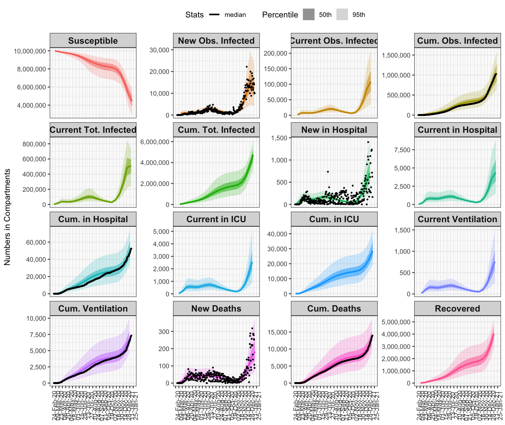
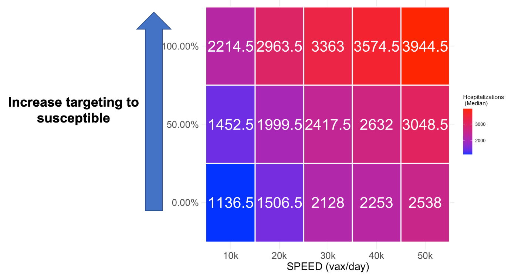

Policy evaluation: Vaccination targeting susceptibles only
Based on epidemic model fit to LAC data as of 2021-01-20
USC Department of Preventive Medicine, Division of Biostatistics
Model calibration
Model fits
Summarizes the epidemic model fit with COVID-19 data for LAC from March 1 through 2021-01-14 for all disease states across multiple views: New cases, representing new daily incidence; the current number in a compartment at a specific date, relevant for understanding current prevalence rates and comparing with healthcare capacity limitations; and cumulative counts until a specific date. Observed data for available compartments with cases attributable to nursing home residents removed, are plotted as black dots. The figure demonstrates that good model fits are achieved in all compartments across time.
- New = new daily incidence
- Current = current census in compartment
- Cumulative = running total over time
- Black dots depict COVID-19 data, with counts from outbreaks in nursing homes removed
- The dashed line represents healthcare resource capacity limits
Model fits through 2021-01-20

Model projections
Projections under the assumption of the infectious rate as of 2021-01-20
Vaccination Scenarios
Evaluating targeting of susceptibles above recovereds, vs. speed of vaccination
Parameters fixed in scenarios:
- \(R(t) = 1.5\) – value estimated as of 2021-01-20
- Vaccination starting date: 12-15-20 (from LA Times)
- Date 65+ group starts vaccination: 2-1-21 (as promised)
- Vaccine coverage rate in 65+ (% final updake by population): 88% (from Understanding America Study, USC Dornsife)
- Vaccination rate 12-15-20 to 1-20-21: approximately 8500 vaccines given per day (from LA Times)
Parameters varied in scenarios:
- Vaccination speed first 100 days of Biden (1-20-21 - 4-30-21): 0, 10k, 20k, 30k, 40k, 50k vaccines given per day
- Vaccination targeting: 0%, 50%, 100% targeting of true susceptibles (sero-negative) only for vaccination, where:
- 100% targeting means 100% of vaccines go first to true susceptibles (sero-negative) only
- 0% targeting means vaccines are given regardless of previous infection history)
Comparing Targeting vs. Speed
Deaths: Targeting vs. Speed
Lives saved: Differences from no vaccination

Factor increase in lives saved relative to no targeting and speed = 10k

Totals

Hospitalizations: Targeting vs. Speed
Differences from no vaccination

Factor increase in hospitalizations averted relative to no targeting and speed = 10k
Cumulative
Scenario timeseries
Scenario inputs and selected outputs
